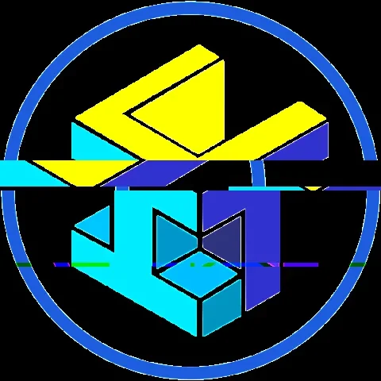
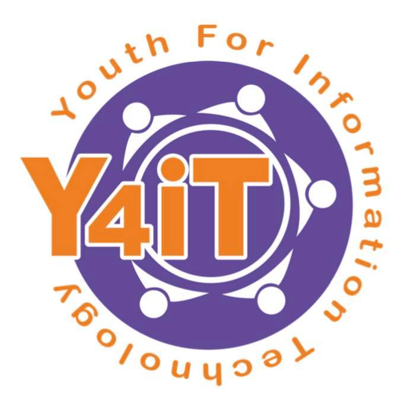

AIM Events and Activities

ICT Week
This event is an Annual Celebration for ICT Major students of La Verdad Christian College of Apalit, Pampanga. Started in the year of December 2017 and is currently on its 4th Year. The celebration includes activities such as seminars from invited IT Professionals, hackathons, programming competitions, and as well as sports that help build bond amongst team members.

Youth for IT (Y4IT)
Y4iT is a 3-day event hosted by the UP System Information Technology Foundation for computer-related professions and technology. This is a nationwide event which is attended by IT professionals, teachers, students, and enthusiasts. The event is composed of different series of topics presentations from professionals around the globe.
.png)
BSIS & ACT Program Orientation
Before a semester begins, every course program conducts a program orientation. This includes the announcement of upcoming events, elected officers, and rediscussion of the organizations mission and vision. The organization's previous ICT Majors orientation was held last January 12, 2021.